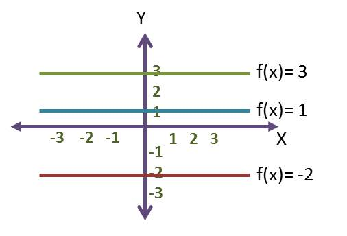

MATE-DIVIERTETE- FUNCIONES
FUNCIÓN CONSTANTE
FUNCIÓN CONSTANTE GRAFICA Y EJEMPLOS
Función constante: son aquellas cuya forma se expresa mediante la expresión de la forma f(x) = b, donde b es una constante. Por ejemplo, f(x) = 3, (que corresponde al valor de y) donde el dominio es el conjunto de los números reales y el recorrido es {3}, por tanto y = 3.
GRAFICA DE LA FUNCIÓN CONSTANTE

Para identificar una función si es constante primero la función cumple con f(x)=c donde (c) es un valor constante, si graficamos debe ser una recta horizontal característica de una constante y por ultimo, se puede definir una función constante a partir de su derivada, donde una función f será constante si para todo punto x del dominio la derivada es nula, es decir f ’(x) = 0.
Propiedades de una función constante
Dentro de la propiedades de una función constante tenemos:
El dominio son todos los números reales.
El rango es solamente el valor de la constante.
La función constante es continua y par por tomar siempre el mismo valor.
La función constante no es ni creciente ni decreciente.
La pendiente de la función siempre es nula.
La función siempre corta al eje Y en el punto (0,Y).
Si K es diferente a cero, la función constante no tiene raíz, pero si k es igual a cero todos los números reales son raíces de la función constante.
El limite de una función constante tiene como resultado la misma constante.
La derivada de la función constante siempre es nula.
La integral de la función constante es la función afín.
Obra publicada con Licencia Creative Commons Reconocimiento Compartir igual 4.0